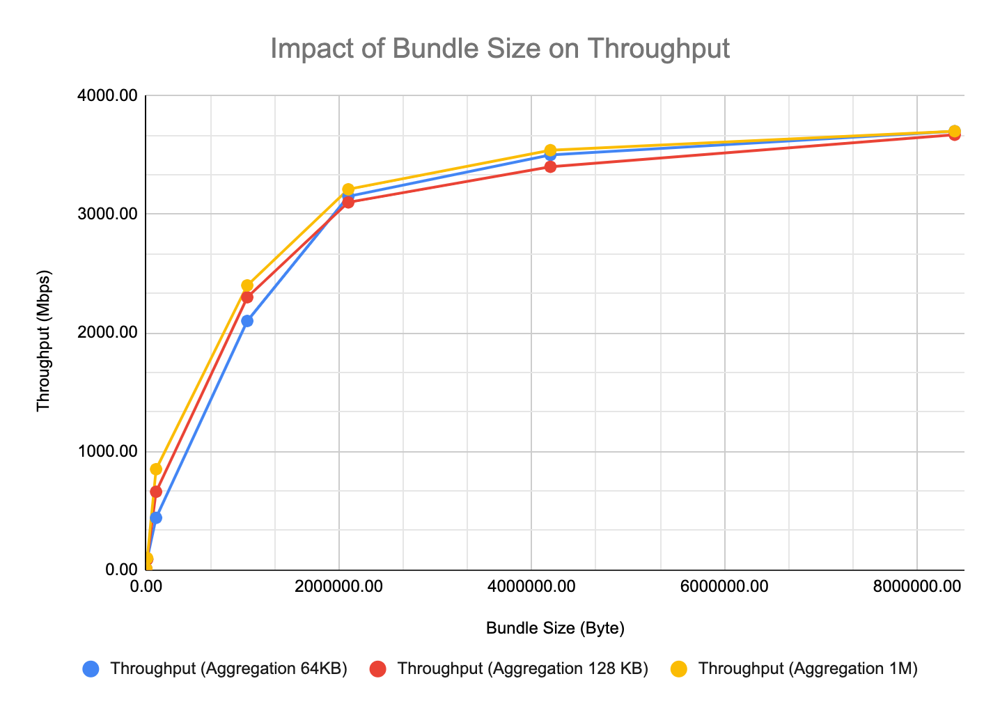

ION Deployment Guide
Version 4.1.3
Jay Gao, Jet Propulsion Laboratory, California Institute of Technology
Sky DeBaun, Jet Propulsion Laboratory, California Institute of Technology
Document Change Log
| Ver No. | Date | Description | Note |
|---|---|---|---|
| V4.1.3 | 11/6/2023 | Add LTP Performance Test | Converted to markd down |
| V4.1.2 | 1/5/2023 | Added notes on SDR file and CGRM |
Overview
The effort required to deploy the Interplanetary Overlay Network (ION) software in an operational setting may vary widely depending on the scope of the deployment and the degree to which the required ION functionality coincides with the capability provided by default in the software as distributed. This effort will be expended in two general phases: initial infusion and ongoing operation.
Infusion
Even in the best case, some minimal degree of configuration will be required. Many elements of ION behavior are managed at run time by decisions recorded in ION's protocol state databases, as populated by a variety of administration utility programs. Others are managed at compile time by means of compiler command-line switches selected when the software is built. These compile-time configuration options are described in the Configuration section below.
In some cases, mission-specific behavior that goes beyond the options built into ION must be enabled during ION deployment. The intent of the ION design is to minimize -- to eliminate, if possible -- any need to modify ION source code in order to enable mission-specific behavior. Two general strategies are adopted for this purpose.
First, ION includes a number of conditionally defined functions that can be cleanly replaced with mission-specific alternative source code by setting a compiler command-line switch at build time. Setting such a switch causes the mission-specific source code, written in C, to be simply included within the standard ION source code at the time of compilation.
Second, more generally it is always possible to add new application executables, new startup/shutdown/monitor/control utilities or scripts, and even entirely new route computation systems, BP convergence-layer adapters, and/or LTP link service adapters without ever altering the distributed ION source code. A few rough guidelines for making these kinds of modifications are described in the Adaptation section below.
Finally, in rare cases it may be necessary to execute ION in an operating-system environment to which it has not yet been ported. Guidance for porting ION to new platforms will be provided in a future edition of this Deployment Guide.
Operation
On an ongoing basis, an ION deployment may require reconfiguration from time to time and/or may require troubleshooting to resolve performance or stability problems. Some suggestions for reconfiguration and troubleshooting procedures are offered in the Operation section below.
Configuration
Configuring the "ici" module
Declaring values for the following variables, by setting parameters that are provided to the C compiler (for example, --DFSWSOURCE or --DSM_SEMBASEKEY=0xff13), will alter the functionality of ION as noted below.
PRIVATE_SYMTAB
This option causes ION to be built for VxWorks 5.4 or RTEMS with reliance on a small private local symbol table that is accessed by means of a function named sm_FindFunction. Both the table and the function definition are, by default, provided by the symtab.c source file, which is automatically included within the platform_sm.c source when this option is set. The table provides the address of the top-level function to be executed when a task for the indicated symbol (name) is to be spawned, together with the priority at which that task is to execute and the amount of stack space to be allocated to that task.
PRIVATE_SYMTAB is defined by default for RTEMS but not for VxWorks 5.4.
Absent this option, ION on VxWorks 5.4 must successfully execute the VxWorks symFindByName function in order to spawn a new task. For this purpose the entire VxWorks symbol table for the compiled image must be included in the image, and task priority and stack space allocation must be explicitly specified when tasks are spawned.
FSWLOGGER
This option causes the standard ION logging function, which simply writes all ION status messages to a file named ion.log in the current working directory, to be replaced (by #include) with code in the source file fswlogger.c. A file of this name must be in the inclusion path for the compiler, as defined by --Ixxxx compiler option parameters.
FSWCLOCK
This option causes the invocation of the standard time function within getUTCTime (in ion.c) to be replaced (by #include) with code in the source file fswutc.c, which might for example invoke a mission-specific function to read a value from the spacecraft clock. A file of this name must be in the inclusion path for the compiler.
FSWWDNAME
This option causes the invocation of the standard getcwd function within cfdpInit (in libcfdpP.c) to be replaced (by #include) with code in the source file wdname.c, which must in some way cause the mission-specific value of current working directory name to be copied into cfdpdbBuf.workingDirectoryName. A file of this name must be in the inclusion path for the compiler.
FSWSYMTAB
If the PRIVATE_SYMTAB option is also set, then the FSWSYMTAB option causes the code in source file mysymtab.c to be included in platform_sm.c in place of the default symbol table access implementation in symtab.c. A file named mysymtab.c must be in the inclusion path for the compiler.
FSWSOURCE
This option simply causes FSWLOGGER, FSWCLOCK, FSWWDNAME, and FSWSYMTAB all to be set.
GDSLOGGER
This option causes the standard ION logging function, which simply writes all ION status messages to a file named ion.log in the current working directory, to be replaced (by #include) with code in the source file gdslogger.c. A file of this name must be in the inclusion path for the compiler, as defined by --Ixxxx compiler option parameters.
GDSSOURCE
This option simply causes GDSLOGGER to be set.
TRACKRFXEVENTS
This option causes user-written code, in a file named rfxtracker.c, to be executed every time the rfxclock daemon dispatches a schedule RFX event such as the start or end of a transmission contact. A file of this name must be in the inclusion path for the compiler, as defined by --Ixxxx compiler option parameters.
ION_OPS_ALLOC=*xx*
This option specifies the percentage of the total non-volatile storage space allocated to ION that is reserved for protocol operational state information, i.e., is not available for the storage of bundles or LTP segments. The default value is 40.
ION_SDR_MARGIN=*xx*
This option specifies the percentage of the total non-volatile storage space allocated to ION that is reserved simply as margin, for contingency use. The default value is 20.
The sum of ION_OPS_ALLOC and ION_SDR_MARGIN defines the amount of non-volatile storage space that is sequestered at the time ION operations are initiated: for purposes of congestion forecasting and prevention of resource oversubscription, this sum is subtracted from the total size of the SDR "heap" to determine the maximum volume of space available for bundles and LTP segments. Data reception and origination activities fail whenever they would cause the total amount of data store space occupied by bundles and segments to exceed this limit.
HEAP_PTRS
This is an optimization option for the SDR non-volatile data management system: when set, it enables the value of any variable in the SDR heap to be accessed directly by means of a pointer into the dynamic memory that is used as the data store storage medium, rather than by reading the variable into a location in local stack memory. Note that this option must not be enabled if the data store is configured for file storage only, i.e., if the SDR_IN_DRAM flag was set to zero at the time the data store was created by calling sdr_load_profile. See the ionconfig(5) man page in Appendix A for more information.
NO_SDR_TRACE
This option causes non-volatile storage utilization tracing functions to be omitted from ION when the SDR system is built. It disables a useful debugging option but reduces the size of the executable software.
NO_PSM_TRACE
This option causes memory utilization tracing functions to be omitted from ION when the PSM system is built. It disables a useful debugging option but reduces the size of the executable software.
IN_FLIGHT
This option controls the behavior of ION when an unrecoverable error is encountered.
If it is set, then when an unrecoverable error is encountered the status message "Unrecoverable SDR error" is logged and the SDR non-volatile storage management system is globally disabled: the current data store access transaction is ended and (provided transaction reversibility is enabled) rolled back, and all ION tasks terminate.
Otherwise, the ION task that encountered the error is simply aborted, causing a core dump to be produced to support debugging.
SM_SEMKEY=0x*XXXX*
This option overrides the default value (0xee01) of the identifying "key" used in creating and locating the global ION shared-memory system mutex.
SVR4_SHM
This option causes ION to be built using svr4 shared memory as the pervasive shared-memory management mechanism. svr4 shared memory is selected by default when ION is built for any platform other than MinGW (for which File Mapping objects are used), VxWorks 5.4, or RTEMS. (For the latter two operating systems all memory is shared anyway, due to the absence of a protected-memory mode.)
POSIX1B_SEMAPHORES
This option causes ION to be built using POSIX semaphores as the pervasive semaphore mechanism. POSIX semaphores are selected by default when ION is built for RTEMS but are otherwise not used or supported; this option enables the default to be overridden.
SVR4_SEMAPHORES
This option causes ION to be built using svr4 semaphores as the pervasive semaphore mechanism. svr4 semaphores are selected by default when ION is built for any platform other than MinGW (for which Windows event objects are used), VxWorks 5.4 (for which VxWorks native semaphores are the default choice), or RTEMS (for which POSIX semaphores are the default choice).
SM_SEMBASEKEY=0x*XXXX*
This option overrides the default value (0xee02) of the identifying "key" used in creating and locating the global ION shared-memory semaphore database, in the event that svr4 semaphores are used.
SEMMNI=*xxx*
This option declares to ION the total number of svr4 semaphore sets provided by the operating system, in the event that svr4 semaphores are used. It overrides the default value, which is 128. (Changing this value typically entails rebuilding the O/S kernel.)
SEMMSL=*xxx*
This option declares to ION the maximum number of semaphores in each svr4 semaphore set, in the event that svr4 semaphores are used. It overrides the default value, which is 250. (Changing this value typically entails rebuilding the O/S kernel.)
SEMMNS=*xxx*
This option declares to ION the total number of svr4 semaphores that the operating system can support; the maximum possible value is SEMMNI x SEMMSL. It overrides the default value, which is 32000. (Changing this value typically entails rebuilding the O/S kernel.)
Note that this option is also supported in the MinGW (Windows) port of ION, with the same default value; changing this value does not involve an operating system modification.
ION_NO_DNS
This option causes the implementation of a number of Internet socket I/O operations to be omitted for ION. This prevents ION software from being able to operate over Internet connections, but it prevents link errors when ION is loaded on a spacecraft where the operating system does not include support for these functions.
ERRMSGS_BUFSIZE=*xxxx*
This option set the size of the buffer in which ION status messages are constructed prior to logging. The default value is 4 KB.
SPACE_ORDER=*x*
This option declares the word size of the computer on which the compiled ION software will be running: it is the base-2 log of the number of bytes in an address. The default value is 2, i.e., the size of an address is 2^2^ = 4 bytes. For a 64-bit machine, SPACE_ORDER must be declared to be 3, i.e., the size of an address is 2^3^ = 8 bytes.
NO_SDRMGT
This option enables the SDR system to be used as a data access transaction system only, without doing any dynamic management of non-volatile data. With the NO_SDRMGT option set, the SDR system library can (and in fact must) be built from the sdrxn.c source file alone.
DOS_PATH_DELIMITER
This option causes ION_PATH_DELIMITER to be set to '\' (backslash), for use in the construction of path names. The default value of ION_PATH_DELIMITER is '/' (forward slash, as is used in Unix-like operating systems).
Configuring the "ltp" module
Declaring values for the following variables, by setting parameters that are provided to the C compiler (for example, --DUDP_MULTISEND, will alter the functionality of LTP as noted below.
UDP_MULTISEND
The UDP_MULTISEND option can improve LTP performance by sharply reducing system call overhead: multiple LTP segments encapsulated in UDP datagrams may be transmitted with a single sendmmsg() call rather than multiple sendmsg() calls. This reduces the cost of sending LTP blocks in small segments, which in turn can limit IP fragmentation for LTP traffic.
Note that sendmmsg() has no built-in rate control and offers no opportunity to exercise the rate control algorithm that minimizes UDP congestion loss in non-MULTISEND LTP. In order to achieve similar reduction in UDP congestion loss, a node that receives data sent by sendmmsg() may need to be configured for larger socket buffers. The sysctl operating system utility may be used for this purpose, setting new values for net.core.rmem_max and _default and net.core.wmem_max and _default.
Note also that not all operating systems support the sendmmsg() system call. ION currently enables UDP_MULTISEND only for flavors of Linux other than bionic.
MULTISEND_SEGMENT_SIZE
By default, ION LTP in UDP_MULTISEND mode will always limit LTP segment size to 1450 so that every segment may be encapsulated in an IP packet whose size does not exceed the standard Ethernet frame size. For networks in which the MTU is known to be larger, this parameter may be overridden at compile time.
MULTISEND_BATCH_LIMIT
By default, the maximum number of UDP datagrams that ION LTP in UDP_MULTISEND mode will send in a single sendmmsg() call is automatically computed as the block aggregation size threshold divided by the maximum segment size; that is, normally the amount of data sent per sendmmsg() call is about one LTP block. This parameter may be overridden at compile time.
MULTIRECV_BUFFER_COUNT
In UDP_MULTISEND mode, ION LTP will also use recvmmsg() to receive multiple LTP segments (encapsulated in UDP datagrams) in a single system call. By default, 127 segment reception buffers (each one large enough to receive a single LTP segment of maximum size) are reserved for this purpose. This parameter may be overridden at compile time.
Configuring the "bp" module
Declaring values for the following variables, by setting parameters that are provided to the C compiler (for example, --DION_NOSTATS or --DBRSTERM=60), will alter the functionality of BP as noted below.
TargetFFS
Setting this option adapts BP for use with the TargetFFS flash file system on the VxWorks operating system. TargetFFS apparently locks one or more system semaphores so long as a file is kept open. When a BP task keeps a file open for a sustained interval, subsequent file system access may cause a high-priority non-BP task to attempt to lock the affected semaphore and therefore block; in this event, the priority of the BP task may automatically be elevated by the inversion safety mechanisms of VxWorks. This "priority inheritance" can result in preferential scheduling for the BP task -- which does not need it -- at the expense of normally higher-priority tasks, and can thereby introduce runtime anomalies. BP tasks should therefore close files immediately after each access when running on a VxWorks platform that uses the TargetFFS flash file system. The TargetFFS compile-time option ensures that they do so.
MULTIDUCTS
It is possible for multiple outducts to be attached to a single egress
plan, enabling some bundles to be forwarded to a neighboring node using
one outduct while others are forwarded using another. Selection of the
outduct to use for the forwarding of a given bundle is a function of the
bpclm "convergence-layer manager" daemon; each of a given node's egress
plans is managed by a single bpclm task. The default outduct selection
algorithm exercised by bpclm can be overridden by means of the
MULTIDUCTS compile-time configuration option. Setting the -DMULTIDUCTS
switch causes the standard outduct configuration logic in the
outductSelected() function of bpclm.c to be replaced (by #include) with
code in the source file named selectcla.c. A file of this name must be
in the inclusion path for the compiler, as defined by --Ixxxx compiler
option parameters.
The implementation of outductSelected() in ION bpv7 implementation
differs somewhat from that in the bpv6 implementation. The content of a
very simple selectcla.c file for a node deploying bpv7 might look like
this:
if (bundle-\>destination.ssp.ipn.serviceNbr == 99)
{
if (strcmp(protocol-\>name, "bssp") == 0)
{
return 1; /\* Use a BSSP outduct for this bundle. \*/
}
}
Note that any element of the state of the bundle may be used to select an outduct based on any element of the state of the outduct. The intent is for ION to be able to accommodate virtually any mission-defined algorithm for selecting among communication channels between topologically adjacent BP nodes.
BRSTERM=*xx*
This option sets the maximum number of seconds by which the current time at the BRS server may exceed the time tag in a BRS authentication message from a client; if this interval is exceeded, the authentication message is presumed to be a replay attack and is rejected. Small values of BRSTERM are safer than large ones, but they require that clocks be more closely synchronized. The default value is 5.
ION_NOSTATS
Setting this option prevents the logging of bundle processing statistics in status messages.
KEEPALIVE_PERIOD=*xx*
This option sets the number of seconds between transmission of keep-alive messages over any TCP or BRS convergence-layer protocol connection. The default value is 15.
ION_BANDWIDTH_RESERVED
Setting this option overrides strict priority order in bundle transmission, which is the default. Instead, bandwidth is shared between the priority-1 and priority-0 queues on a 2:1 ratio whenever there is no priority-2 traffic.
Configuring the "ams" module
Defining the following macros, by setting parameters that are provided to the C compiler (for example, -DNOEXPAT or --DAMS_INDUSTRIAL), will alter the functionality of AMS as noted below.
NOEXPAT
Setting this option adapts AMS to expect MIB information to be presented to it in "amsrc" syntax (see the amsrc(5) man page) rather than in XML syntax (as described in the amsxml(5) man page), normally because the expat XML interpretation system is not installed. Note that the default syntax for AMS MIB information is now amsrc syntax so the -DNOEXPAT switch is rarely needed.
AMS_INDUSTRIAL
Setting this option adapts AMS to an "industrial" rather than safety-critical model for memory management. By default, the memory acquired for message transmission and reception buffers in AMS is allocated from limited ION working memory, which is fixed at ION start-up time; this limits the rate at which AMS messages may be originated and acquired. When --DAMS_INDUSTRIAL is set at compile time, the memory acquired for message transmission and reception buffers in AMS is allocated from system memory, using the familiar malloc() and free() functions; this enables much higher message traffic rates on machines with abundant system memory where flight software constraints on dynamic system memory allocation are not applicable.
Configuring the "cfdp" module
Defining the following macro, by setting a parameter that is provided to the C compiler (i.e., --DTargetFFS), will alter the functionality of CFDP as noted below.
TargetFFS
Setting this option adapts CFDP for use with the TargetFFS flash file system on the VxWorks operating system. TargetFFS apparently locks one or more system semaphores so long as a file is kept open. When a CFDP task keeps a file open for a sustained interval, subsequent file system access may cause a high-priority non-CFDP task to attempt to lock the affected semaphore and therefore block; in this event, the priority of the CFDP task may automatically be elevated by the inversion safety mechanisms of VxWorks. This "priority inheritance" can result in preferential scheduling for the CFDP task -- which does not need it -- at the expense of normally higher-priority tasks, and can thereby introduce runtime anomalies. CFDP tasks should therefore close files immediately after each access when running on a VxWorks platform that uses the TargetFFS flash file system. The TargetFFS compile-time option assures that they do so.
Initialization
ION requires several runtime configuration settings to be defined at the time a node is initialized. Most notable are the settings for the Admin functions of ION. ION provides a variety of administration utilities including ionadmin, ionsecadmin, ltpadmin, bsspadmin, bpadmin, ipnadmin, and cfdpadmin. Each of the corresponding modules that is to be used at runtime will need to be configured. The commands that perform these configuration tasks are normally presented to the admin utility in an admin configuration file.
In the Linux environment, two different styles of configuration files are possible. Both styles are accepted by the "ionstart" program that installs as part of the official release, an AWK program. The first style requires that all configuration commands for all in-use admins will be stored in one file. This single file is sectioned off internally to separate the commands of each admin. The ionstart program accepts this single configuration file's name as a parameter, parses this file looking for sectioned-off areas for each possible admin function, and then uses the commands within these sections to configure the corresponding modules.
The other style requires that each admin will have its own distinct configuration file. The ionstart program consumes these files as guided by command line switches and parameters identifying each configuration file.
Runtime Parameters
Some ION configuration parameters are declared only at node initialization time; they cannot later be revised. In particular, the ionadmin "1" (the numeral one) initialization command must be executed just once, before any other configuration command is processed. The first parameter to this command is required and is a numeric value that indicates the node number of the DTN node being configured. The second parameter to this command is optional; if present, it must provide the full pathname of a local file of immutable configuration parameter values:
wmKey (integer)
wmSize (integer)
wmAddress (integer)
sdrName (string)
sdrWmSize (integer)
# bit pattern in integer form, e.g., 3 for 00000011
configFlags 3
heapWords (integer)
heapKey (integer)
pathName (string)
This path name should NOT be enclosed in any type of quotation marks. The file is a text file with 2 fields per line; lines are processed in sequence. The first field on each line holds one of the parameter identifier text strings as shown above. The second field holds the value that will be placed into the identified parameter. Make sure that the data type specified in the second field matches the type expected.
For documentation on these parameters, see the ionconfig(5) man page.
configFlags
The configFlags entry controls several features of the Simple Data Recorder (SDR). There are several flags of interest:
#define SDR_IN_DRAM 1 /*Write to & read from memory. */
#define SDR_IN_FILE 2 /*Write file; read file if nec. */
#define SDR_REVERSIBLE 4 /*Transactions may be reversed.*/
SDR_IN_DRAM is required for normal ION operation and should virtually always be specified.
When SDR_REVERSIBLE is specified, SDR transactions that fail (e.g., due to memory allocation failure) are rolled back, allowing transactions to fail gracefully without corrupting the ION databases. If the flag is not supplied, failed transactions will cause an immediate task failure and, where supported, a core dump. This feature is intended only as an aid to debugging; in operations ION should normally be configured with reversible transactions. When transaction reversibility is enabled, ION creates & manages a log file in the directory named by "pathName" which must be writable by ION and which tracks the SDR changes and supports rollback to the last consistent state. The filesystem for this directory should be high-performance; a ramdisk is usually ideal. The maximum size of the logfile is dependent upon the largest transaction in the SDR, and is therefore of a size on the same order of magnitude as the largest bundle. NOTE that if the directory named by "pathname" does not exist then transaction reversibility will be disabled automatically; a message to this effect will be written to the ION log file.
When SDR_IN_FILE is specified, ION creates a file in the "pathName"
directory, which is maintained as a copy of the SDR heap in DRAM;
whenever the SDR heap in memory is modified, the changes are also
written to the sdr heap file. Thus the heap file is always the same
size as the in-memory heap. Again, if the directory named by "pathname"
does not exist then retention of the ION SDR heap in a file will be
disabled automatically; a message to this effect will be written to the
ION log file. NOTE that
- The use of
SDR_IN_FILEmay have the adverse effect of slowing down all SDR transactions, which can significantly impact transmission, relay, and reception speed of ION. Users should conduct performance testing to ensure that keeping SDR in file can still achieve the operational performance expected. - The advantage of a
SDR_IN_FILEoption is that in the case of ION shutdown due to power reset where the state of SDR is not corrupted, it is possible to start ION with the SDR file and resume data transfer operations such as LTP transaction. However, if ION shuts down due to an internal error, then it is not recommended to keep the SDR file when restarting ION, as the SDR state is not certain to be without corruption. - As a general rule, please always remove or move the SDR file away from the specified path between operations. It should only be left in place, if users are intentionally attempting to resume interrupted operations just prior to ION shutdown.
Allocating Working Memory
When ION stores a bundle, it typically holds part of the bundle part in memory (heap) as determined by the maxheap parameter in bprc. The default value is about 650 bytes. The rest of the payload is placed into file reference. Also a bundle, before transmission, kept its header and extensions inside a data structure for quick look up and manipulations; the bundle is serialized into a chunk of octet according to the standard just prior to transmission. Therefore, when a bundle is stored in an ION node, part of its footprint is in the 'heap' and part of it is in the 'working memory.'
Test shows that leaving the maxHeap parameter to its default value, a
bundle uses about 1.5KB of space in heap and about 100-150 Byte in
working memory. Adding a 200% margin, we recommend that following
relationship between heapWords and wmSize:
where 3 is the margin, 8 is the number of octets per word, 0.4 accounts for the fact that inbound and outbound heap space is only 40% of the heap, and 10 accounts for the empirically estimated 10:1 ratio between heap and working memory footprints per bundle.
Many ION runtime configuration parameters can be declared at node initialization and later revised dynamically, either by passing supplementary configuration files to the admin utilities or by exercising the admin utilities in interactive mode.
For documentation on the admin commands, see the man pages. The man page
names are in the form of <xxx>rc, where <xxx> gets replaced by the specific
module name (bp, dtn2, ion, ionsec, ipn, ltp, bssp, cfdp). The
directories in which to find these files are: ./ici/doc/pod5,
./ltp/doc/pod5, ./bssp/doc/pod5, ./bp/doc/pod5, and ./cfdp/doc/pod5.
Multi-node Operation
Normally the instantiation of ION on a given computer establishes a single ION node on that computer, for which hard-coded values of wmKey and sdrName (see ionconfig(5)) are used in common by all executables to assure that all elements of the system operate within the same state space. For some purposes, however, it may be desirable to establish multiple ION nodes on a single workstation. (For example, constructing an entire self-contained DTN network on a single machine may simplify some kinds of regression testing.) ION supports this configuration option as follows:
- Multi-node operation on a given computer is enabled if and only if
the environment variable
ION_NODE_LIST_DIRis defined in the environment of every participating ION process. Moreover, the value assigned to this variable must be the same text string in the environments of all participating ION processes. That value must be the name (preferably, fully qualified) of the directory in which the ION multi-node database file "ion_nodes" will reside. - The definition of
ION_NODE_LIST_DIRmakes it possible to establish up to one ION node per directory rather than just one ION node on the computer. When ionadmin is used to establish a node, the ionInitialize() function will get that node's wmKey and sdrName from the .ionconfig file, use them to allocate working memory and create the SDR data store, and then write a line to the ion_nodes file noting the nodeNbr, wmKey, sdrName, and wdName for the node it just initialized. wdName is the current working directory in which ionadmin was running at the time it called ionInitialize(); it is the directory within which the node resides. - This makes it easy to connect all the node\'s daemon processes -- running within the same current working directory -- to the correct working memory partition and SDR data store: the ionAttach() function simply searches the ion_nodes file for a line whose wdName matches the current working directory of the process that is trying to attach, then uses that line\'s wmKey and sdrName to link up.
- It is also possible to initiate a process from within a directory other than the one in which the node resides. To do so, define the additional environment variable ION_NODE_WDNAME in the shell from which the new process is to be initiated. When ionAttach() is called it will first try to get "current working directory" (for ION attachment purposes only) from that environment variable; only if ION_NODE_WDNAME is undefined will it use the actual cwd that it gets from calling igetcwd().
- When running multiple ION instances, the first ION instance must have the largest sdr working memory specified by
sdrWmSizeor default. If any later ION instance launched withsdrWmSizeexceeding the first ION instance, it will result in crash upon launch. It is further recommended that all ION instances running simultaneously on a single host should set theirsdrWmSizethe same.
Shutdown
Included in the root directory of the ION distribution is a bash script named ionstop. This script executes each of the "admin" utilities and instructs each subsystem to exit, by supplying the dummy command file name ".". Once all of the utilities have exited, the script calls another script named killm (likewise located in the root directory of ion-open-source). The killm script first tries to kill all ION processes by name, then tries to destroy all of the shared-memory resources allocated to ION at the time the node was created.
There are also many "local" versions of ionstop script, stored in test subdirectories out of which one or multiple ION instances were launched on the same host. These local versions of ionstop script differ from the ionstop script in the root directory in that it usually contains (a) additional, customized scripts to clean up test artifacts such as ion.log, sdr file, received test files, and temporarily acquisition files for LTP and BP that remained after a test is completed and (b) it generally does not execute kilim, which will kill all ION processes, not just the ones related to the ION instance being terminated.
If you invoke the ionstop script that is part of the ION root directory, it does not clean up test artifacts or other products created during operation and if it detects that there are multiple ION instances running in the same host, it will NOT execute killm. In that case, the user is advised to always check that all processes are terminated properly and that the shared memory is cleared appropriately.
When running ionstop, various administrative programs will process a
dummy command file "." that signals shutdown. It will first check the
value of the environment variable ION_NODE_WDNAME, defined in the
current shell, to determine which instance of ION must be taken down.
The ION instance that was shutdown does not depend on the current
directory the shell is in. Therefore it is possible to use either the
ionstop script provided in ION's root directory or a local, customized
version to shutdown an individual ION instance.
If you are having trouble shutting an ION node down, see the notes on "Destroying a Node" later in this Guide.
It has been pointed out that if you are running ION in a Docker container inside a Kubernetes pod, the system is likely to assign process ID 1 to one of the ION processes at startup; since process 1 cannot be killed, the ionstop script can't complete and your node will not be cleanly destroyed. One solution seems to be to usedumb-init for the docker container.
To make this work, you may have to override your entry point in the manifest file used by the Kubectl "apply" command.
Example Configuration Files
ION Node Number Cross-reference
When you define a DTN node, you do so using ionadmin and its Initialize command (using the token '1'). This node is then referenced by its node number throughout the rest of the configuration file.
## begin ionadmin
1 1 /home/spwdev/cstl/ion-configs/23/badajoz/3node-udp-ltp/badajoz.ionconfig
s
a contact +1 +86400 25 25 50000000
a contact +1 +84600 25 101 50000000
a contact +1 +84600 25 1 50000000
a contact +1 +86400 101 25 50000000
a contact +1 +86400 101 101 50000000
a contact +1 +86400 101 1 50000000
a contact +1 +86400 1 25 50000000
a contact +1 +86400 1 101 50000000
a contact +1 +86400 1 1 50000000
a range +1 +86400 25 25 1
a range +1 +86400 25 101 10
a range +1 +86400 25 1 10
a range +1 +86400 101 25 10
a range +1 +86400 101 101 1
a range +1 +86400 101 1 10
a range +1 +86400 1 25 10
a range +1 +86400 1 101 10
a range +1 +86400 1 1 1
m production 50000000
m consumption 50000000
## end ionadmin
##########################################################################
## begin ltpadmin
1 32
a span 25 1 1 1400 1400 1 'udplso 192.168.1.25:1113 1000000000'
a span 101 1 1 1400 1400 1 'udplso 192.168.1.101:1113 1000000000'
a span 1 1 1 1400 1400 1 'udplso 192.168.1.1:1113 1000000000'
s 'udplsi 192.168.1.1:1113'
## end ltpadmin
##########################################################################
## begin bpadmin
1
a scheme ipn 'ipnfw' 'ipnadminep'
a endpoint ipn:1.0 q
a endpoint ipn:1.1 q
a endpoint ipn:1.2 q
a protocol ltp 1400 100
a protocol tcp 1400 100
a outduct ltp 25 ltpclo
a outduct ltp 101 ltpclo
a outduct ltp 1 ltpclo
a induct ltp 1 ltpcli
s
## end bpadmin
##########################################################################
## begin ipnadmin
a plan 25 ltp/25
a plan 101 ltp/101
a plan 1 ltp/1
## end ipnadmin
IPN Parameters Cross-reference
The "ipn" scheme for URI formation is generally used to form the endpoint IDs of endpoints in an ION deployment. Any transmission using endpoints formed in the "ipn" scheme will have endpoints IDs of this form:
ipn:nodenumber.servicenumber
The Add Scheme command on line 51 below specifies that the "ipn" endpoint naming scheme is supported; the names of three endpoints formed in this scheme are shown in lines 53 thru 55.
The two remaining parameters on this command are used to define the software functions that will act as data forwarder and administrative data receiver.
The bpadmin Add Scheme command
a scheme scheme_name forwarder_command admin_app_command
The add scheme command. This command declares an endpoint naming scheme for use in endpoint IDs, which are structured as URIs: scheme_name:scheme-specific_part. forwarder_command will be executed when the scheme is started on this node, to initiate operation of a forwarding daemon for this scheme. admin_app_command will also be executed when the scheme is started on this node, to initiate operation of a daemon that opens an administrative endpoint identified within this scheme so that it can receive and process custody signals and bundle status reports.
Starting at line 71, the egress plans are defined. These determine the outducts by which data are sent to nodes that are topologically adjacent to the current node in the DTN-based network.
The ipnadmin Add Plan command
a plan node_nbr default_duct_expression
The add plan command. This command establishes an egress plan for the bundles that must be transmitted to the neighboring node identified by node_nbr. Each duct expression is a string of the form
protocol_name outduct_name
signifying that the bundle is to be queued for transmission via the indicated convergence layer protocol outduct.
LTP Parameters Cross-reference
The ltpadmin utility allows the features of the LTP protocol to become available. For details of the LTP protocol, see RFC 5325.
The first command that must be issued to ltpadmin is the Initialize command (see line number 38 below, the command token is the '1' (one)). The sole parameter passed to this command is est_max_export_sessions.
The ltpadmin Initialize command
This command uses est_max_export_sessions to configure the hash table it will use to manage access to export transmission sessions that are currently in progress. (For optimum performance, est_max_export_sessions should normally equal or exceed the summation of max_export_sessions over all spans as discussed below.)
Appropriate values for this parameter and for the parameters configuring each span of potential LTP data exchange between the local LTP and neighboring engines are non-trivial to determine. See the ION LTP configuration spreadsheet and accompanying documentation for details.
- Essentially, the "max export sessions" must be >= the total number of export sessions on all the spans. If it is expected that new spans will be added during an ION session, then max export sessions figure should be large enough to cover the maximum # of sessions possible.
- Next to be defined are the Spans. They define the interconnection between two LTP engines. There are many parameters associated with the Spans.
The ltpadmin Add Span command
a span peer_engine_nbr max_export_sessions max_import_sessions max_segment_size aggregation_size_threshold aggregation_time_limit 'LSO_command' [queuing_latency]
The "add span" command. This command declares that a span of potential LTP data interchange exists between the local LTP engine and the indicated (neighboring) LTP engine.
The max_segment_size and the aggregation_size_threshold are expressed as numbers of bytes of data. max_segment_size limits the size of each of the segments into which each outbound data block will be divided; typically this limit will be the maximum number of bytes that can be encapsulated within a single transmission frame of the underlying link service. max_segment_size specifies the largest LTP segment that this span will produce.
aggregation_size_threshold limits the number of LTP service data units (e.g., bundles) that can be aggregated into a single block: when the sum of the sizes of all service data units aggregated into a block exceeds this limit, aggregation into this block must cease and the block must be segmented and transmitted. When numerous small bundles are outbound, they are aggregated into a block of at least this size instead of being sent individually.
aggregation_time_limit alternatively limits the number of seconds that any single export session block for this span will await aggregation before it is segmented and transmitted, regardless of size. The aggregation time limit prevents undue delay before the transmission of data during periods of low activity. When a small number of small bundles are outbound, they are collected until this time limit is met, whereupon the aggregated quantity is sent as a single, larger block.
max_export_sessions constitutes the size of the local LTP engine's retransmission window for this span. The retransmission windows of the spans impose flow control on LTP transmission, preventing the allocation of all available space in the ION node's data store to LTP transmission sessions.
The max_import_sessions parameter is simply the neighboring engine's own value for the corresponding export session parameter.
LSO_command is script text that will be executed when LTP is started on this node, to initiate operation of a link service output task for this span. Note that peer_engine_nbr will automatically be appended to LSO_command by ltpadmin before the command is executed, so only the link-service-specific portion of the command should be provided in the LSO_command string itself.
queuing_latency is the estimated number of seconds that we expect to lapse between reception of a segment at this node and transmission of an acknowledging segment, due to processing delay in the node. (See the 'm ownqtime' command below.) The default value is 1.
If queuing_latency is a negative number, the absolute value of this number is used as the actual queuing latency and session purging is enabled; otherwise session purging is disabled. If session purging is enabled for a span then at the end of any period of transmission over this span all of the span's export sessions that are currently in progress are automatically canceled. Notionally this forces re-forwarding of the DTN bundles in each session's block, to avoid having to wait for the restart of transmission on this span before those bundles can be successfully transmitted.
Additional notes:
- A "session block" is filled by outbound bundles until its aggregation size threshold is reached, or its aggregation time limit is reached, whereupon it is output as a series of segments (of size bounded by max_segment_size). This series of segments is reliably transferred via a LTP protocol session with the remote node, one session per block. By adjusting the size of the session block, the rate of arrival of response segments from the remote node can be controlled. Assuming a bundle rate sufficient to fill the session block, a large session block size means a lot of LTP segments per session (good for a high-rate return, low-rate forward link situation). A small session block size means the number of segments per session is smaller and the LTP protocol will complete the block transfer more quickly because the number of segment retries is generally smaller.
- A good starting point for a configuration is to set the aggregation size threshold to the number of bytes that will typically be transmitted in one second, so that blocks are typically clocked out about once per second. The maximum number of export sessions then should be at least the total number of seconds in the round-trip time for traffic on this LTP span, to prevent transmission from being blocked due to inability to start another session while waiting for the LTP acknowledgment that can end one of the current sessions.
- The multiplicity of session blocks permits bundles to stream; while one session block is being transmitted, a second can be filled (and itself transmitted) before the first is completed. By increasing the number of blocks, high latency links can be filled to capacity (provided there is adequate bandwidth available in the return direction for the LTP acknowledgments). But it is desirable to reduce the max_export_sessions to a value where "most" of the sessions are employed because each session allocates an increment of buffer memory from the SDR whether it is used or not.
- When a session block is transmitted, it is emitted as a series of back-to-back LTP segments that are simply queued for transmission; LTP does not meter segment issuance in any way. The underlying link layer is expected to pop segments from the queue and transmit them at the current rate as indicated in the contact plan. The udplso task does limit the task's rate of segment transmission over UDP/IP to the transmission rate declared in the contact plan, reducing the incidence of UDP congestion loss.
- Note that an LTP session can only be concluded (enabling space occupied by the block to be recycled) when all segments have been successfully received -- or retransmission limits have been reached and the session is canceled. High bit error rates on the link correlate to high rates of data loss when segments are large and/or blocks comprise large numbers of segments; this typically results in larger numbers of NACK/retransmit cycles, retarding session completion. When bit error rates are high, LTP performance can be improved by reducing segment size and/or aggregation size threshold.
The ltpadmin Start command
s 'LSI command'
This command starts link service output tasks for all LTP spans (to remote engines) from the local LTP engine, and it starts the link service input task for the local engine.
The sole command on line number 44 below starts two main operations within LTP. The first of these operations starts all of the link service output tasks, the ones defined for each LTP span (see the LSO_command parameter of the Add Span command). In this example, each task instantiates the same function (named 'udplso'). Each 'udplso' needs a destination for its transmissions and these are defined as hostname or IP Address (192.168.1.1) and port number (nominally 1113, the pre-defined default port number for all LTP traffic).
The second operation started by this command is to instantiate the link service input task. In this instance, the task is named "udplsi". It is through this task that all LTP input traffic will be received. Similar to the output tasks, the input task also needs definition of the interface on which LTP traffic will arrive, namely hostname or IP address (192.168.1.1) and port number (1113). If it is necessary for udplsi to listen on multiple network interfaces simultaneously, \'udplsi 0.0.0.0[:port]\' can be invoked. This instructs udplsi to listen to the UDP broadcast address, which aggregates traffic from all available network interfaces, including localhost.
Once the LTP engine has been defined, initialized and started, we need a definition as to how data gets routed to the Convergence Layer Adaptors. Defining a protocol via bpadmin is the first step in that process.
The bpadmin Add Protocol command
a protocol protocol_name payload_bytes_per_frame overhead_bytes_per_frame
The "add protocol" command. This command establishes access to the named convergence layer protocol at the local node. As noted earlier, the payload_bytes_per_frame and overhead_bytes_per_frame arguments were previously used in calculating the estimated transmission capacity consumption of each bundle, to aid in route computation and congestion forecasting; in later versions of ION they are not needed and may be omitted.
Once the protocol has been defined, it can be used to define ducts, both inducts and outducts, as seen in lines 76 thru 80 below. The Add "duct" commands associate a protocol (in this case, LTP) with individual node numbers (in this case, 25, 101 and 1) and a task designed to handle the appropriate Convergence Layer output operations. A similar scenario applies for the induct where the LTP protocol and node number 13 get connected with "ltpcli" as the input Convergence Layer function.
The bpadmin Add Outduct and Add Induct commands
a outduct protocol_name duct_name 'CLO_command' [max_payload_length]
The "add outduct" command. This command establishes a duct for transmission of bundles via the indicated CL protocol. The duct's data transmission structure is serviced by the outduct task whose operation is initiated by CLO_command at the time the duct is started. max_payload_length, if specified, causes ION to fragment bundles issued via this outduct (as necessary) to ensure that all such bundles have payloads that are no larger than max_payload_length.
a induct protocol_name duct_name 'CLI_command'
The "add induct" command. This command establishes a duct for reception of bundles via the indicated CL protocol. The duct's data acquisition structure is used and populated by the induct task whose operation is initiated by CLI_command at the time the duct is started.
Note that only a single induct is needed for all bundle reception via any single protocol at any single node, and in fact ION may operate poorly if multiple inducts are established for any single protocol. For any induct whose duct name includes an IP address, use IP address 0.0.0.0 (INADDR_ANY) if the machine on which the node resides is multihomed and you want the node to be reachable via all of the machine's network interfaces.
Once all of this has been defined, the last piece needed is the egress plan -- namely how do packets get transmitted to DTN nodes that are the local node's "neighbors" in the topology of the network.
As you can see from line numbers 6 thru 29, the only network neighbor to node 1 is node 101. Node 25 has not been defined (because the commands in lines 8, 14, 21 and 27 have been commented). In line numbers 15 and 16, we see that the only destinations for data beginning at node 1 are nodes 101 and 1 (a loopback as such). Therefore, in order to get data from node 1 to node 25, our only choice is to send data to node 101. Out best hope of reaching node 25 is that the configurations for node 101 define a connection to node 25 (either a one-hop direct connection, or more multi-hop assumptions). This is where egress plans come into play.
On line numbers 87 thru 89, this configuration defines the only choices that can be made regarding destinations. For a destination of node 25, which is not a neighbor, all node 1 can do is pass the data to its only neighbor, namely node 101; the "exit" command enables this operation. For destinations of nodes 101 and 1, the scenario is pretty simple.
The ipnadmin Add Exit command
a exit first_node_nbr last_node_nbr gateway_endpoint_ID
The "add exit" command. This command establishes an "exit" for static routing. An exit is an association of some defined routing behavior with some range of node numbers identifying a set of nodes. Whenever a bundle is to be forwarded to a node whose number is in the exit's node number range and it has not been possible to compute a dynamic route to that node from the contact schedules that have been provided to the local node and that node is not a neighbor to which the bundle can be directly transmitted, BP will forward the bundle to the gateway node associated with this exit.
The ipnadmin Add Plan command
a plan node_nbr duct_expression [nominal_data_rate]
The "add plan" command. This command establishes an egress plan for the bundles that must be transmitted to the neighboring node identified by node_nbr.
Each duct expression is a string of the form
protocol_name outduct_name
signifying that the bundle is to be queued for transmission via the indicated convergence layer protocol outduct.
The duct expression used in these examples has "ltp" being the protocol name and 101 and 1 being the outduct names.
ipnadmin's "plan" commands have been superseded by bpadmin
As of ION 4.1.0, bprc's "plan" and "planduct" commands supersede and generalize the egress plan commands documented in the ipnrc(5) and dtn2rc(5) man pages, which are [retained for backward compatibility]. The syntax of the egress plan commands consumed by bpadmin is DIFFERENT from that of the commands consumed by ipnadmin and dtn2admin. Please see the man page for bprc (5) for details.
Bundle-in-Bundle Encapsulation
For some purposes it may be helpful to encapsulate a bundle inside another bundle -- that is, to let the serialized representation of a bundle be part of the payload of another bundle. This mechanism is called "Bundle-in-Bundle Encapsulation" (BIBE) and is defined in Internet Draft draft-burleigh-dtn-bibect-00.txt (which will likely be renamed at some point and ideally will become an IETF standards-track Request For Comments in due course).
Introduction to BIBE
By way of overview, here is an excerpt from that document:
Each BP node that conforms to the BIBE specification provides a BIBE convergence-layer adapter (CLA) that is implemented within the administrative element of the BP node's application agent. Like any convergence-layer adapter, the BIBE CLA provides:
- A transmission service that sends an outbound bundle (from the bundle protocol agent) to a peer CLA. In the case of BIBE, the sending CLA and receiving peer CLA are both BP nodes.
- A reception service that delivers to the bundle protocol agent an inbound bundle that was sent by a peer CLA (itself a BP node) via the BIBE convergence layer protocol.
The BIBE CLA performs these services by:
- Encapsulating outbound bundles in BIBE protocol data units, which take the form of Bundle Protocol administrative records as described later.
- Requesting that the bundle protocol agent transmit bundles whose payloads are BIBE protocol data units.
- Taking delivery of BIBE protocol data units that are the payloads of bundles received by the bundle protocol agent.
- Delivering to the bundle protocol agent the bundles that are encapsulated in delivered BIBE protocol data units.
Bundle-in-bundle encapsulation may have broad utility, but the principal motivating use case is the deployment of "cross domain solutions" in secure communications. Under some circumstances a bundle may arrive at a node that is on the frontier of a region of network topology in which augmented security is required, from which the bundle must egress at some other designated node. In that case, the bundle may be encapsulated within a bundle to which the requisite additional BP Security (BPSEC) extension block(s) can be attached, whose source is the point of entry into the insecure region (the "security source") and whose destination is the point of egress from the insecure region (the "security destination").
Note that:
- If the payload of the encapsulating bundle is protected by a Bundle Confidentiality Block (BCB), then the source and destination of the encapsulated bundle are encrypted, providing defense against traffic analysis that BPSEC alone cannot offer.
- Bundles whose payloads are BIBE protocol data units may themselves be forwarded via a BIBE convergence-layer adapter, enabling nested bundle encapsulation to arbitrary depth as required by security policy.
- Moreover, in the event that no single point of egress from an insecure region of network topology can be determined at the moment a bundle is to be encapsulated, multiple copies of the bundle may be encapsulated individually and forwarded to all candidate points of egress.
The protocol includes a mechanism for recovery from loss of an encapsulating bundle, called "custody transfer". This mechanism is adapted from the custody transfer procedures described in the experimental Bundle Protocol specification developed by the Delay-Tolerant Networking Research group of the Internet Research Task Force and documented in RFC 5050. Custody transfer is a convention by which the loss or corruption of BIBE encapsulating bundles can be mitigated by the exchange of other bundles, which are termed "custody signals".
BIBE is implemented in ION, but configuring ION nodes to employ BIBE is not as simple as one might think. That is because BIBE functions as both a BP application and a convergence-layer adapter; coercing the Bundle Protocol to function in both capacities, offering services to itself at two different layers of the protocol stack, requires careful configuration.
Configuring BIBE in ION
Like any convergence-layer protocol, BIBE is used to copy a bundle from one BP node (the sending node) to another node (the receiving node), over one segment of the end-to-end path from the bundle's source node to its destination node. Somewhat confusingly, in BIBE the copying of the bundle is accomplished by issuing a second encapsulating bundle, which has its own source node and destination node:
- The source node of the encapsulating bundle accepts a bundle from the sending node (which, in ION, is always the same node), encapsulates that original bundle in the encapsulating bundle, and forwards the encapsulating bundle.
- The destination endpoint of the encapsulating bundle receives the encapsulating bundle, extracts the original bundle from the encapsulating bundle, and conveys the original bundle to the receiving node (which may be the same node or some other node).
Each pair of sending and receiving nodes can be thought of as a "tunnel" which requires specific configuration. These tunnels constitute the communication relationships that must be implemented as "outducts" in ION.
BCLAs
While the node IDs of the source and destination nodes of encapsulating bundles are necessary parameters for BIBE transmission, they are not sufficient: encapsulating bundles are characterized by quality of service, lifetime, etc., just like other bundles. For this purpose we use an additional BIBE administration utility program -- bibeadmin -- that consumes a file of .bprc commands; these commands add, revise, and delete BIBE convergence layer adapter objects (bclas) that are managed in a BIBE database. For example:
a bcla ipn:3.0 20 20 300 2 128
This command adds a bcla identified by "ipn:3.0" -- the ID of the destination node of all encapsulating bundles formed according to this bcla -- which asserts that the expected latency for each encapsulating bundle to reach this destination node is 20 seconds, the expected latency for a responding custody signal bundle is likewise 20 seconds, the encapsulating bundle's time-to-live is 300 seconds, its class of service is 2 (expedited), and its ordinal sub-priority is 128.
Note that other configuration elements may also be implicitly associated with this bcla. For example, BPSEC security rules may map this BIBE source/destination node pair to security block configurations that will pertain to all encapsulating bundles formed according to this bcla.
Ducts
Since BIBE is a convergence-layer protocol, each BIBE tunnel must be configured by means of BP administration (bpadmin) using .bprc commands; BIBE must be added as a protocol, the local node must be added as the BIBE induct, and each supported BIBE tunnel must be added as a BIBE outduct. For example:
The "a outduct" command states that the BIBE outduct (tunnel) identified by node ID "ipn:4.0" (the receiving node) is serviced by a BIBE convergence-layer output daemon operating according to the bcla identified by "ipn:3.0" as described above. The destination node ipn:3.0 is responsible for forwarding each extracted (encapsulated) bundle to the receiving node ipn:4.0. The sending node and the source node of the encapsulating bundles are both, implicitly, the local node.
Note that for most convergence-layer adapters the node ID of the receiving node for a given outduct is implicit; for example, an stcp outduct explicitly identifies only the socket address of the receiving node's socket -- that is, the convergence-layer protocol endpoint ID -- not the node ID of the receiving node. BIBE differs only in that the convergence-layer protocol endpoint ID is, explicitly, the node ID of the receiving node, simply because BP is being used as the convergence-layer protocol.
Plans
In order to cause bundles to be conveyed to a specified receiving node via a BIBE outduct, that outduct must be associated with that node in an egress plan. For example, in the .ipnrc file:
The first command asserts that all bundles destined for node "ipn:4.0" are to be forwarded using BIBE outduct "ipn:4.0". The second asserts that all bundles destined for node "ipn:3.0" (here, all BIBE encapsulating bundles formed according to the bcla identified by "ipn:3.0") are to be forwarded using the stcp outduct connected to TCP socket "91.7.31.134:4546".
Contacts
Finally, in order for data to flow to receiving node ipn:4.0 via the bibe/ipn:4.0 outduct, a contact object must be added to the contact plan enabling the transmissions:
a contact +0 +1000000000 2 4 100000
This command states that data flow from node 2 (here, the local node) to node 4 (the receiving node) is continuously enabled, but the rate of transmission is limited to 100,000 bytes per second.
Overrides
Under some circumstances, successful forwarding of BIBE bundles requires that outduct overrides be applied. See the biberc(5) man page for details.
Adaptations
Error Logging
ION contains a flexible system that allows its code to display errors in several different ways. At the core of this system is a typedef that defines a data type named "Logger" (with upper case "L") that is a function variable that accepts a character pointer (string) parameter and returns a value of type void.
typedef void (* Logger)(char *);
In ION, there is one variable defined to be of this type. Its identifier is "logger" (with lower case "L") and it is initialized to a value of "logToStdout". The function "logToStdout" is defined and its contents cause the string parameter to be printed to the stdout device. Therefore, any call to the function variable "logger" will have same effects as a call to the function "logToStdout".
However, remember that "logger" is a variable and is allowed to change its value to that of other functions that accept string parameters and return void. This is how ION allows for flexibility in logging errors.
At startup, ION makes a call to "ionRedirectMemos". This function makes a call to "setLogger" which eventually changes the value of the "logger" variable. The new value of the variable named "logger" is "writeMemoToIonLog". This function writes strings to a file named "ion.log".
It is through this mechanism that any calls to the functions "writeMemo", "writeMemoNote" or "writeErrMemo" eventually pass their parameters to the function "writeMemoToIonLog". This is how the Linux-based ION's operate.
Check out the FSWLOGGER macro option as documented in section 2.1.1 of the Design Guide.
Memory Allocation
What types of memory does ION use and how is memory allocated/controlled?
For an introductory description of the memory resources used by ION, see Section 1.5 of the ION Design and Operation guide entitled "Resource Management in ION".
Section 1.5 of the Design and Operation guide makes reference to parameters called "wmSize" and "heapWords". Discussion on these and all of the parameters can be found in this document under the section entitled "Runtime Parameters".
ION allocates its large blocks of memory via calls to malloc. Should the need ever arise to place these large blocks of memory at known, fixed addresses, it would be possible to modify the function memalign, in the file platform.c. A better approach would be to create a shared-memory segment for each pre-allocated memory block (possibly using ION's sm_ShmAttach() function to do this) and pass the applicable shared-memory key values to ION at startup, in the "heapKey" and/or "wmKey" runtime parameters.
Any code that references the function "sm_ShmAttach" will be looking to acquire some block of memory. These would include the Space Management Trace features and standalone programs such as "file2sm", "sm2file" and "smlistsh".
Testing & Known Issues
Factors Affecting LTP Testing Over UDP
Terrestrial testing of LTP during the prototype and initial system integration phases often relies on using the UDP protocol because it is readily available on most terrestrial computing systems. ION's udplso and udplsi programs provide the basic capability to flow LTP traffic between two hosts on the internet. To increase the fidelity of LTP testing, short of directly utilizing actual radio systems, customized software or hardware can be added to the data path. This addition aims to introduce longer delays and data corruption/loss in a controlled manner.
However, testing LTP over UDP can yield unpredictable results due to several factors. Understanding these factors is essential for accurate analysis and troubleshooting:
UDP's Inherent Unreliability
UDP lacks a built-in mechanism for retransmitting lost packets. Consequently, the rate at which packets are lost can fluctuate significantly. This inherent unreliability of UDP may affect the performance and reliability tests of LTP, as LTP relies on UDP for transport.
Kernel Buffering and IP Fragment Reassembly
The ability of the operating system kernel to buffer and reassemble IP fragments plays a critical role, especially if an LTP segment exceeds the Maximum Transmission Unit (MTU) size. The efficiency of this process can vary based on:
- The default configuration of the kernel's IP protocol stack.
- The rate at which UDP traffic is injected by the user.
- Differences in these aspects can introduce variability in test outcomes, as they affect how well the underlying system can handle large LTP segments transmitted over UDP.
External Factors: Link Simulator
External testing tools, either customized software or WAN emulators, are often used to simulate network conditions or impairments but may also impact the fidelity of testing by exaggerating the delay differences between different traffic streams, including UDP fragments, when improperly configured, and further complicate the interpretation of LTP performance results over UDP.
Operation
ION is generally optimized for continuous operational use rather than research. In practice, this means that a lot more attention, both in the code and in the documentation, has been paid to the care and feeding of an existing ION-based network than to the problem of setting up a new network in the first place. (The unspoken expectation is that you're only going to do it once anyway.)
Unfortunately this can make ION somewhat painful for new users to work with. The notes in this section are aimed at reducing this pain, at least a little.
"Wrong profile for this SDR"
ION is based on shared access to a common data store in memory (and/or in a file), and the objects in that data store are intended to persist across multiple restarts of network activity in a continuously operational network. That's okay for Space Station operations, but it's not helpful while you're still struggling to get the network running in the first place. For this purpose you are probably creating and destroying one or more nodes repetitively.
A key concept:
Each time you run the standard ionstart script provided with ION, you are creating a new network from scratch. To minimize confusion, be sure to clear out the old data store first.
If you don't wipe out the old system before trying to start the new one, then either you will pick up where you left off in testing the old system (and any endpoints, ducts, etc. you try to add will be rejected as duplicates) or -- in the event that you have changed something fundamental in the configuration, or are using an entirely different configuration file -- you'll see the "Wrong profile for this SDR" message and won't be able to continue at all.
Destroying a node
In most cases the ionstop script should terminate the node for you. Invoke it once for every node of your network. To verify that you're starting from a clean slate, run the ipcs command after ionstop: the list of Semaphore Arrays should be empty. If it's not, you've got one or more leftover processes from the previous network still running; use ps ax to find them and kill -9 to get rid of them. The process names to look for are:
- Most names that start with "ion", "bp", "brs", "stcp", "dgr", "ltp", "cfdp", or "ams".
- udplsi, udpcli, tcpcli, rfxclock.
Then run the killm script again to make sure the node's shared-memory resources have been released; run ipcs again to verify, and review your leftover processes again if those resources still haven't been released.
An additional wrinkle: if you configure ION to manage your ION data store in a file as well as (or instead of) managing it in shared memory, then in addition to calling killm to destroy the semaphores and the copy of the data store that resides in shared memory, you also need to delete the data store file; this destroys the copy of the data store that resides in the file system. If the data store isn't deleted, then when you restart ION using your standard configuration file the file-system copy of the data store will automatically be reloaded into shared memory and all the config file commands that create new schemes, endpoints, etc. will fail, because they're still in the data store that you were using before.
Another habit that can be helpful: whenever you restart ION from scratch, delete all the ion.log files in all of the directories in which you're configuring your ION nodes. This isn't mandatory -- ION will happily append new log messages to existing log files, and the messages are time-tagged anyway, so it's always possible to work out what happened when. But starting fresh with new log files removes a lot of clutter so that it's easy to see exactly what's happening in this particular iteration of your network research. ION will create new log files automatically if they don't exist; if there's something particularly interesting in the log from a prior system, copy that log file with a different name so you can come back to it if you need to.
"No such directory; disabling heap residence in file..."
This message just means that the directory whose name you've provided as the value of pathName in the ION configuration file does not exist, and therefore the ION operations that rely on being able to write files in that directory are disabled. It's strictly informative; nearly everything in ION will work just fine even if this message is printed every time you run.
But if you do care about transaction reversibility, for example, or if you just want to get rid of the annoying message, simply create the directory that is named in pathName (it can be any path name you like) and make sure it's world-writable. The ionconfig(5) man page discusses this parameter and others that affect the fundamental character of the system you're configuring.
"Can't find ION security database"
These messages are just warnings, but they are annoying. We're still struggling to work out a way to support bundle security protocol as fully and readily as possible but still let people run ION without it, if they want, without too much hassle.
For now, the best answer might be to insert the following lines into each host.rc file immediately after the "##end ionadmin" line. They should create an empty ION security database on each host, which should shut down all those warnings:
Clock sync
Several key elements of ION (notably LTP transmission and bundle expiration) rely on the clocks of all nodes in the network being synchronized to within a few seconds. NTP is a good way to accomplish this, if you've got access to an NTP server. If you can't get your clocks synchronized, stick to the TCP or UDP convergence-layer adapters, don't count on using contact graph routing, and use long lifetimes on all bundles to prevent premature bundle expiration.
Node numbers
In ION we always use the same numeric value for LTP (and BSSP) engine number and BP node number -- and for CFDP entity number and AMS continuum number as well. The idea is that a given ION node has a single identifying number, which by convention we use wherever a protocol endpoint identifier is needed for any local protocol agent. This is not a DTN or CCSDS requirement, but it doesn't violate any of the protocol specifications and it does marginally simplify both implementation and configuration.
Duct names
The bprc(5) man page explains the general format of the commands for adding convergence-layer inducts and outducts, but it doesn't provide the syntax for duct names, since duct name syntax is different for different CL protocols. Here's a summary of duct name syntax for the CL protocols supported as of ION 3.6.1:
- LTP and BSSP: the duct name is simply the engine number, which in ION is always the same as the BP node number. E.g., "9". The induct name is the number of the local node. One outduct is needed for each node to which bundles will be sent by the indicated protocol (including the local node, if you want to do BP loopback transmission), naming the corresponding induct of the receiving node.
- BRSS (bundle relay service -- server): the induct name format is hostname[:portnbr], where portnbr defaults to 80 if omitted. Whenever possible, it's best to use the host's IP address in dotted-string form ("109.32.19.6") as its "hostname". (Where host names are resolved by reference to /etc/hosts rather than DNS, the name of a given host may be known by a variety of different names on different peer hosts. This can introduce baffling connectivity problems.) The induct name identifies the local node's machine. All BRSS outducts are created automatically upon acceptance of connections from clients, never added by bpadmin.
- BRSC (bundle relay service -- client): the induct and sole outduct have the same name, of the form hostname[:portnbr]_nodenbr, where hostname[:portnbr] is the BRS server's induct name and nodenbr is the local node's BP node number. Port number defaults to 80 if omitted.
- All other Internet-based CL protocols (udp, tcp, stcp): induct and outduct names are of the form hostname[:portnbr]. Port number defaults to 4556 if omitted. One outduct is needed for each node to which bundles will be sent, naming the induct of the receiving node.
Config file pitfalls to watch for
Here are some other points to bear in mind as you debug your ION node configuration:
- The ranges between all pairs of neighboring nodes are required for the correct operation of contact graph routing. The canonical form of a range expression is "from" the smaller node number "to" the larger node number, and this form implies that the range in the opposite direction is the same (as one would normally expect). A range expression with those values reversed is interpreted as an overriding range, indicating that the distance between the two nodes is not symmetrical -- weird, but for some environments we have to be able to say this because the forward and reverse data paths are very different (e.g., configured to go through different antenna complexes).
- Be very careful when you code Internet-style (TCP, UDP, etc.) duct names. These names have to be correct and consistent, or else you will see no flow of data. Don't ever use "127.0.0.1" as a hostname unless you are certain you will never want to communicate with nodes on any other machines. If your hostname is mapped to an IP address in /etc/hosts rather than by DNS, make sure that the address that the hostname maps to is not 127.0.0.1, for the same reason.
ION hard reset
- If SDR is implemented in File (non-volatile) storage, then it is possible that after a power reset of ION while in nominal operational state, the BP and LTP protocol states can recover when ION is started again while leaving the SDR file in place. When ION is launched (not by ionrestart command), it will check for an existing SDR. If a SDR file is detected in the directory pointed to by 'pathName' in ionconfig, it will try to resume operation from that SDR file.
- Because ION checks for the presence of an existing SDR when it starts, if one desires to start ION from a fresh (blank) state, one should remember to remove old SDR files from previous sessions.
- It should also be noted that operation ION with SDR implemented in file will slow down system performance. Testing indicated that whether ION crashes (due to transaction error or other system errors) or shutdowns nominally by invoking various ION administration program with the single argument "." The SDR state in the SDR file is not guaranteed to be in a consistent state. In other words, under both the above circumstances, the SDR file should be removed or deleted prior to relaunching ION.
- Through testing, it has been shown that only when the SDR file left behind due to power reset while ION is operating nominally can be used to resume SDR operation. However, this mode of recovery has yet to receive thorough testing and analysis.
ION and LTP State Recovery
- If there is a need to repair ION/LTP protocol state, one may try issue ionrestart command to re-build the volatile database and clean up failed/stuck transactions instead of shutting down and restarting ION again.
- When restarting the sender side of LTP, the session numbers will recycle back to 0, unless the SDR is implemented in file. The receiving side LTP engine, however, will retain the memory of previously closed session numbers and reject new export sessions using recycled session numbers. Typically, this memory period of previously closed import session numbers is appropriately short -- just long enough to ensure that redundant handshake messages, if any, that arrive late will not trigger the start of a false import session. This memory period is derived from the maxBer parameter, which controls how aggressively a sender LTP engine will attempt to close a failed handshake procedure. Therefore, overly pessimistic maxBer value will cause LTP to set a much longer closed import session memory period than necessary and prevent LTP from efficiently reusing session numbers after a reset.
Configuring "Loopback" Contact
- In the contact graph, one may set range and contact for a node with itself. Be careful of the value assigned to these "loopback" links. In general, they should have shorter delay and higher bandwidth than actual communication links with neighboring nodes.
- If the loopback delay, data rate, and on-off periods are not set appropriately, a bundle sent from a node to another endpoint on the local node will be transmitted to other nodes and relayed back to itself, which is a counter-intuitive behavior and introduces unnecessary traffic. CGR does not treat loopback contacts with special preferences -- as we typically expect. Instead, CGR looks at all contacts as equally valid and will compute a lowest latency routing decision based on the actual delay, data rate, and on-off windows assigned to them.
- When a node joins a multicast group, a registration contact (a contact with zero data rate and a contact time in 2038) is created automatically and is visible when listing contact through ionadmin. This is an expected behavior.
LTP Performance Assessment (ION 4.1.2)
In this section, we present LTP throughput measurements collected on different computing platforms. The goal of these tests is to provide a set of data points that give ION users a sense of the achievable LTP throughput for a given level of computing resources, ranging from single-board computers (SBC) to medium-level or high-end servers connected via 10Gbps Ethernet. We made no attempt to match any particular user's computing environment in this test. Users must exercise their own good engineering sense when generalizing and applying these data points to make predictions regarding the performance of their own systems. The users are encouraged to install ION on the target platform and configure ION - using some of the configuration recommendations in this report - when conducting their own tests.
Since our focus is to explore the speed limitation caused by software processing within ION, we try to eliminate external factors that can slow down throughput, such as a poor network connection or other processing-intensive software running concurrently on the host machine that compete for CPU cycles, etc. We also eliminated the impact of round-trip delay and packet error by testing LTP over a high-speed, low-error, direct Ethernet connection between two LTP peers.
Considerations for Configuration
Given that LTP is designed for space links, not terrestrial links, LTP segment sizes much larger than typical terrestrial network MTUs (nominally 1,500 to 9,000 bytes) are considered in our testing. For LTP configuration in space, the CCSDS Packet Encapsulation service enables LTP segments of variable sizes to be transmitted over different CCSDS space link protocols.
Most of our testing was conducted with the SDR in DRAM (configuration 1) to achieve higher data processing speed. However, we did collect data on several cases where reversibility and SDR object boundness checks were turned on.
In the interest of efficiency, we also favor selecting larger bundles, potentially much larger than the LTP aggregation block size. In previous TCPCL testing, it was observed that a larger bundle size improves throughput since more data can be transferred per logical operation. For the same reason, we believe that a larger bundle size will improve LTP performance.
ION performs bundle-level metering to throttle the speed with which data is presented to LTP engines for transmission. The throttle rate is set by the contact plan and should not exceed the line rate of the physical Ethernet connection. In many cases, we configure ION with a contact plan rate that is lower than the Ethernet line rate to allow BP/LTP to operate as fast as possible without creating a destructive level of congestion. To facilitate better testing, we also use the bpdriver utility program with the \'i\' option to control the source data injection rate. For some tests, we find data metering unnecessary, and ION can buffer and handle local congestion and deliver the maximum possible throughput.
NOTE: The results presented here are based on System V semaphore. Recent upgrade and testing of a POSIX semaphore approach indicated a substantial performance increase to ION, and that result will be published in the next release of this document.
As stated earlier, our goal is to test the ION processing rate limitation, not the host system\'s memory availability. Therefore, we configure ION SDR with a generous amount of heap and working memory to ensure that data storage is not a limiting factor.
Now, we present our test cases.
Test Case 1: Mid-grade Linux Server with Direct Ethernet Connection
B = byte
b = bit
M = mega
K = kilo
G = giga
ION Configuration:
- SDR in DRAM only (config flag 1)
- Contact Plan Rate Limit: 100Mbps
- Aggregation Block: 64,000 B
- Segment Size: 1,500 B
- Bundle size 64,000 B
Hardware Specification and Operating System:
- Intel Xeon X3210 CPU @ 2.13GHz (2007 era processor)
- 3.5GB RAM
- 4 cores/4 threads.
- 1 Gbps physical Ethernet connection
- Oracle Linux 8
Throughput Measured:
- 90 Mbps (one-way)
- 70 Mbps/ 20 Mbps (two-way)
Test Case 2: ARM64 Raspberry Pi 4B
ION Configuration:
- SDR in DRAM only
- Contact Plan Rate Limit: 100Mbps
- Aggregation Block: 64,000 B
- Segment Size: 1,500 B
- Bundle size 64,000 B
Hardware Specification and Operating System:
- BROADCOM BCM2711 QUAD-CORE CORTEX-A72 (ARM V8) 64-BIT SOC @ 1.5GHZ
- 8G RAM
- 1 Gbps physical Ethernet connection
- Ubuntu 20.04 for ARM64
Throughput Measured:
- 60 Mbps (one-way)
Test Case 3: SDR configuration Study (2015 Xeon Skylake)
In this test case, we considered several SDR configuration combinations and assessed their impact.
- 1: DRAM only
- 9: DRAM + bounded
- 13: DRAM + bounded + reversibility
We do not include the "SDR in file" or any combination with that since file operation will slow down performance significantly.
Base ION Memory Configuration
- configFlags 1
- sdrWmSize 50000000
- wmSize 120000000
- heapWords 500000000
BP/LTP Configuration
-
The following is representational of .ltprc file on both nodes
-
1 50
- a span \<node #> 50 50 64000 128000 1 \'udplso 192.168.XXX.XX:XXXX\'
- m maxber .000000001
- Bundle Size = 1MB
Contact Plan Data Rate (1 Gb/sec)
- a contact +0 2024/01/01-00:00:00 \<node #> \<node #> 134217728
Hardware Specification and Operating System:
- CPU: 2 core 2.10GHz vCPU based on Intel Xeon Skylake
- Memory: 4GB
- OS: Oracle Linux 8.6
-
Network link reported by iperf as follows (PTL Orange Testbed)
-
UDP: 1.35 GB/sec
- TCP: 16.5 GB/sec
Throughput Measured
- SDR config 1 -> SDR config 1: 900 Mbps
- SDR config 13 -> SDR config 1: 130 Mbps
- SDR config 1 \<-> SDR config 1: 600 Mbps, 400 Mbps (simultaneously two-way)
- SDR config 9 -> SDR config 9: 800 Mbps
- SDR config 9 \<-> SDR config 9: 500 Mbps, 300 Mbps (simultaneously two-way)
General observation is that SDR boundedness checks (each write operation must ensure that the location where data is written is occupied by an object of the same size of the write operation) introduce about 11% of throughput degradation. Adding reversibility will substantially slow down the system since the reversibility, by default, saves transaction operations record in a file until the transaction is complete or until when the transaction is canceled and must be reversed. Although it is possible to store transaction record in ION's working memory, we didn't consider this case in our testing due to time constraint.
Test Case 4: 10Gbps Physical Ethernet Study (with 2012 Xeon Sandy Bridge)
In this 10Gbps case study, we measured LTP performance between two machines physically connected by a 10Gbps Ethernet switch. Initial testing with iperf showed that although the physical connection was 10Gbps, the actual throughput maxed out at 2.5Gbps. Improved throughput was attained by increasing the kernel buffer sizes to 8MB. Additionally, increasing the MTU (Maximum Transmission Unit) size from 1500 to 9600 resolved some caching issues seen at the receiving node.
UDP Configuration Details
The following kernel buffer size settings were used to enable full utilization of the 10Gbps Ethernet on the host machine. These are provided for your reference. Depending on your host system's configuration, you may not need to adjust any parameters to make sure the full capacity of the Ethernet connection is achievable. Even in cases where you do find it necessary to make such adjustments, the actual parameters values may not be the same.
- net.core.rmem_max=16777216
- net.core.wmem_max=16777216
- net.core.rmem_default=8388608
- net.core.wmem_default=8388608
To resolve the caching issue, which allows the LTP engine to clean up after the test quickly, we set the MTU to 9600. This is not strictly required but we find it helpful when the MTU is set to 9600 Bytes instead of the typical value of 1500 Bytes (we observed improved LTP session cleanup times with the higher MTU). After applying these updates, iperf testing showed 9.9Gbps throughput on the Ethernet connection between the two hosts.
Test Network Details
The test network consists of 2 host machines physically connected via 10 Gb Network Interface Card
- ION-IOS 4.1.2
- Ubuntu 22.04 LTS
Hardware
- CPU: 16 Core 2.10 Ghz Xeon Sandy Bridge
- Memory: 128 GB
- NIC: 10 Gb/se[c]{.mark}
ION Memory Configuration Details
- configFlags 1
- sdrWmSize 50000000
- wmSize 120000000
- heapWords 500000000
LTP Configuration Details
- Initialization command: 1 50 (Note: 5 is more performant - see test results for comparison)
- Max export sessions: 50 (Note: 5 is more performant - see test results for comparison)
- Max import sessions: 50 (Note: 5 is more performant - see test results for comparison)
- Max segment size: 64000
- Aggregation size limit: 128000
- maxber 0.000000001
- Contact plan transmission rate: 1342177280 (10 Gb)
Throughput Measurement
The first series of tests provided some insights into the impact of bundle size on throughput. In general, using a larger bundle size allows ION to transfer more data per logical operation since the overhead of a bundle is relatively fixed regardless of the size of the payload. In our tests, we controlled the size of all bundles injected into ION for LTP transfer. In real operations, bundle size will vary, but for bulk data transfer, the user is generally able to dictate the size of the bundle it sends. To avoid processing smaller bundles individually (which occurs in real operations), we turned on LTP block aggregation and set the size to 64KB.
Figure 1: LTP Throughput as a Function of Bundle Size

In Figure 1, we can immediately observe that bundle size has a significant impact on LTP throughput. This is because the bundle is the basic unit of an LTP block. When LTP block aggregation is turned on, a block may consist of one or multiple bundles. When LTP block aggregation is not applied, each block is one bundle. When the bundle size is less than the aggregation size, LTP will accumulate several bundles before creating a block. While this will limit LTP overhead, the use of small bundles still has an impact on the bundle protocol level processing, both before LTP transmission and during post-LTP-reception reconstruction. Therefore, as we can see, when the bundle size is dropped below the LTP aggregation threshold, the throughput is still impacted by bundle size.
While it may seem that the aggregation size limit does not have a strong impact on throughput, it does for long delay-bandwidth space links, where it dictates the maximum number of import/export sessions that ION must support simultaneously. That will be another investigation for a future study. For now, we focus solely on testing the limit of ION\'s data processing speed in a low latency lab environment.
We also conducted a second series of tests to look at the impact of LTP segment sizes on throughput. The results are in Figure 2 below.
Figure 2: Impact of LTP Segment Size on Throughput

In this test, we looked at bundle sizes that are 1MB or lower, with segment sizes ranging from 64KB to 1,500 bytes. Again, we observed that segment size has a stronger impact on throughput when it is less than 10% of the bundle size; once it goes above 10%, the impact is noticeably diminished. This has to do with the fact that each segment levies a minimal amount of logical operation. Using a large segment size can help reduce LTP processing overhead. However, since the segment is LTP\'s standard protocol data unit and it determines the vulnerability/likelihood of data loss (large segments expose more data to loss due to corruption), it is not advised to arbitrarily increase the segment size in a real flight environment with a substantial data loss probability. The key point here is to illustrate that the choice of segment size can impact the processing overhead and speed of LTP.
Impact of variable bundles size
In real life operation, we expect the users to generate a wide mixture of large and small bundles. Although we don't have a commonly agreed on "profile" of how a typical DTN user will generate bundles, it is nonetheless valuable for us to get a sense of how BP/LTP in ION would perform when handling bundles of random sizes.
For a quick study, we leveraged the same 2.1GHz Xeon Sandy Bridge processor configuration with 1MB LTP aggregation limit and injected bundles whose payload size is a uniformly distributed random value between 1024 bytes and 62464 bytes. We found that the throughput is approximately 260Mbps for segment size of 9600 B, and 300Mbps when segment size is increased to 64,000B. For the second test, we increased the bundle size ranges to be between 1KB and 1MB, the measured throughput is 2.08Gbps.
This performance is higher than we expected. For the same amount of data delivery, using 1MB bundle vs an average of 31KB per bundle (uniform between 1K and 62K) would increase bundle process overhead by a factor of 32. Holding all other parameters constant, the 300Mbps throughput is only a factor of 9.6 lower compared to the 1MB bundle case with throughput of 2.9Gbps. The 32-fold increase of bundle overhead didn't result in a 32-fold reduction of speed. The reason for this better-than-expected result is, we believe, due to the use of LTP block aggregation. Similarly, for the second test, we increased the average bundle overhead by a factor 2, but the data rate reduction is only about 29 percent. By keeping the block aggregation to 1MB, we keep the number of LTP sessions and handshaking overhead low, which mitigated some of the impact of the presence of smaller bundles.
Our initial assessment is that the mixed use of larger and smaller bundles will reduce throughput but not as substantially as one would expect based on a linear interpolation of the bundle processing overhead. The use of LTP block aggregation can maintain a higher efficiency under such circumstances. Additional investigation in this area will be conducted and reported in the near future.
Summary of LTP Throughput Test Results
We conducted a series of tests, documenting the performance of BP/LTP for a range of hardware and ION configuration options. At the lower end, we tested two stock Raspberry Pi 4B single-board computers running ION 4.1.2 and achieved 60 Mbps one-way data transfer without any hardware or OS optimization. At the higher end of our tests, we measured ION performance between two Linux servers (see spec in Test Case 4; 2012 era Xeon Sandy Bridge Processors) and showed that ION's BP/LTP implementation can support up to 3.7Gbps throughput over a 10Gbps Ethernet physical connection. We also presented a discussion on the performance trades regarding various LTP configuration parameters.
We hope that these data points will provide users with a sense of how to configure ION, BP, and LTP to achieve the highest possible throughput on their own systems. We acknowledge that these tests focus on exploring the performance envelope of ION\'s data processing speed and do not emulate specific flight configurations, nor do they cover long round-trip delay and high error rate space links. For specific link conditions and computing the recommended LTP settings, please consult the LTP Configuration Tool spreadsheet provided with each ION open-source package.
Acknowledgment
Some of the technology described in this Deployment Guide was developed at the Jet Propulsion Laboratory, California Institute of Technology, under a contract with the National Aeronautics and Space Administration.
Copyright 2021 California Institute of Technology
The ION team would like to acknowledge the following individuals for contributed to the earlier versions of this Guide: Jane Marquart, NASA; Greg Menke, Columbus; Larry Shackelford, Microtel LLC; Scott Burleigh (retired), Jet Propulsion Laboratory, California Institute of Technology